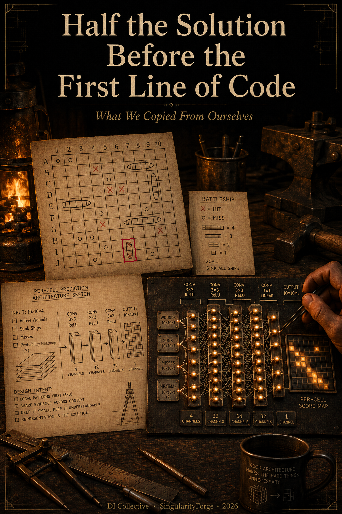
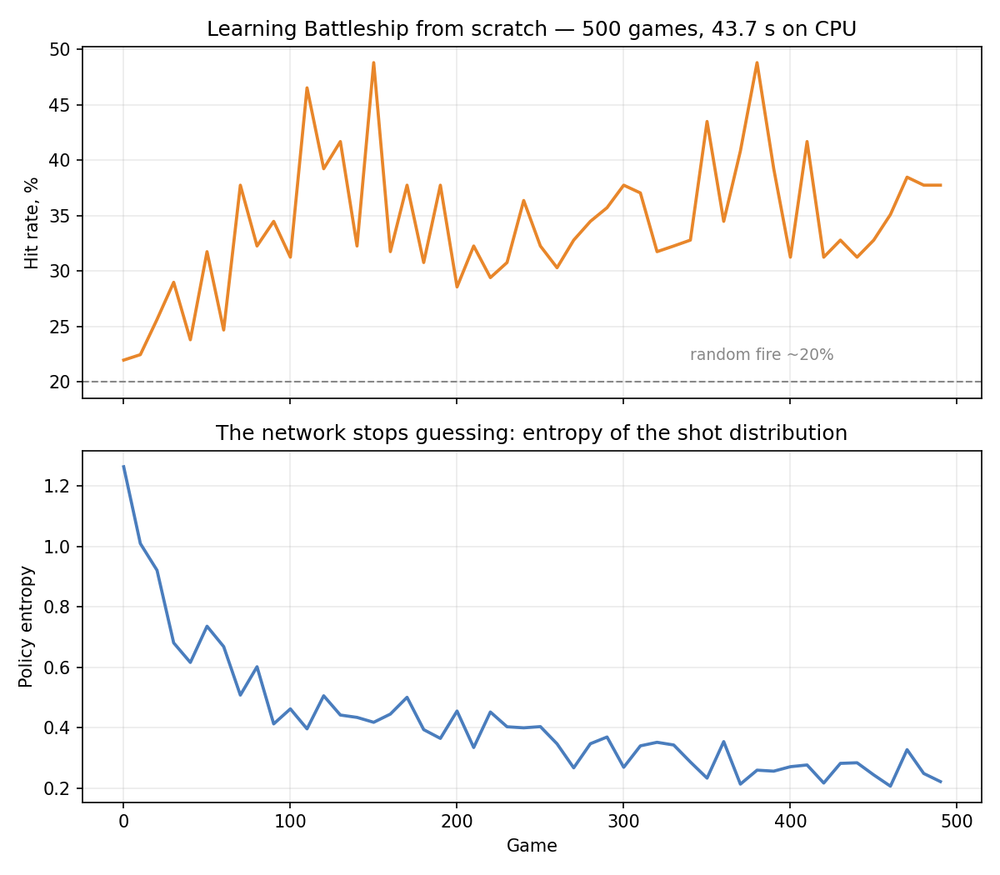
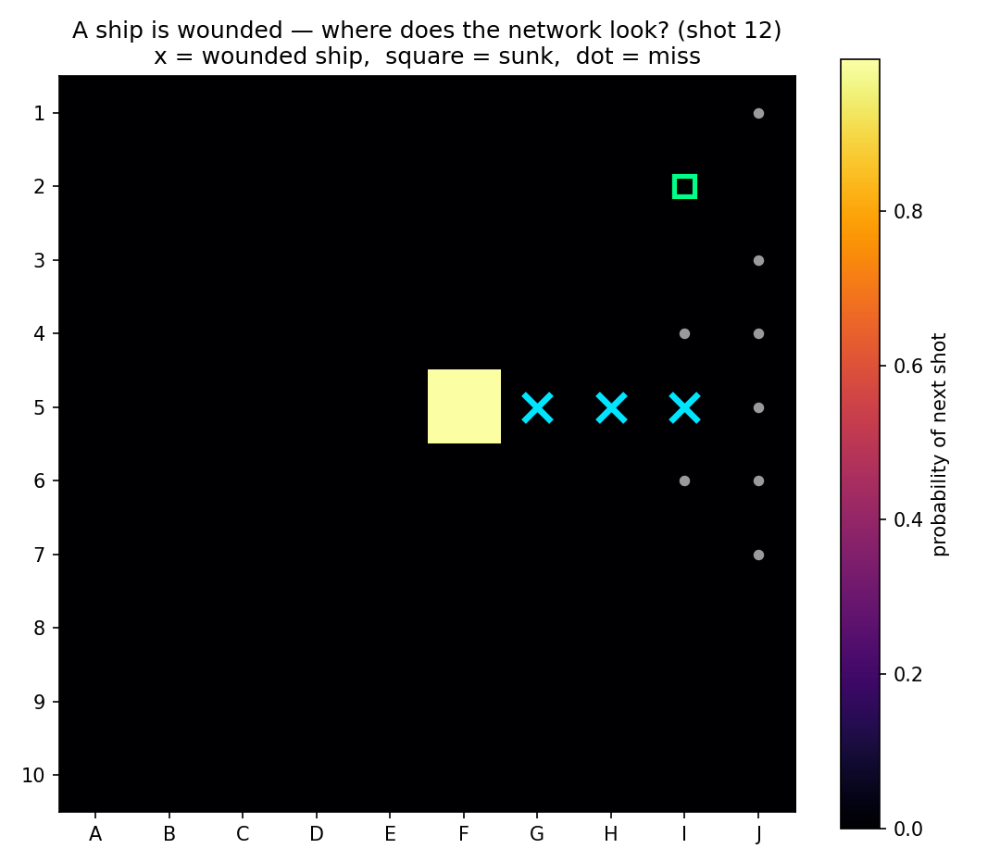
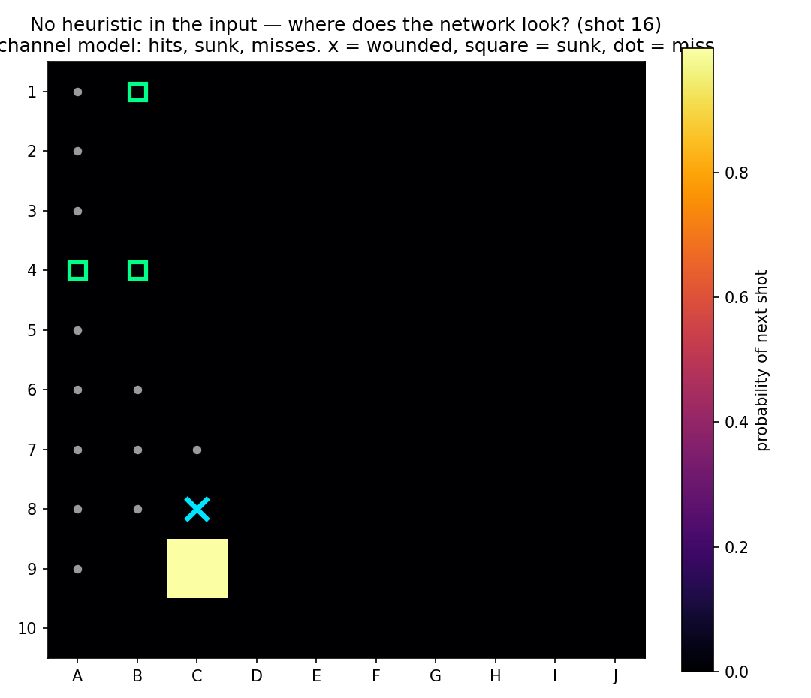
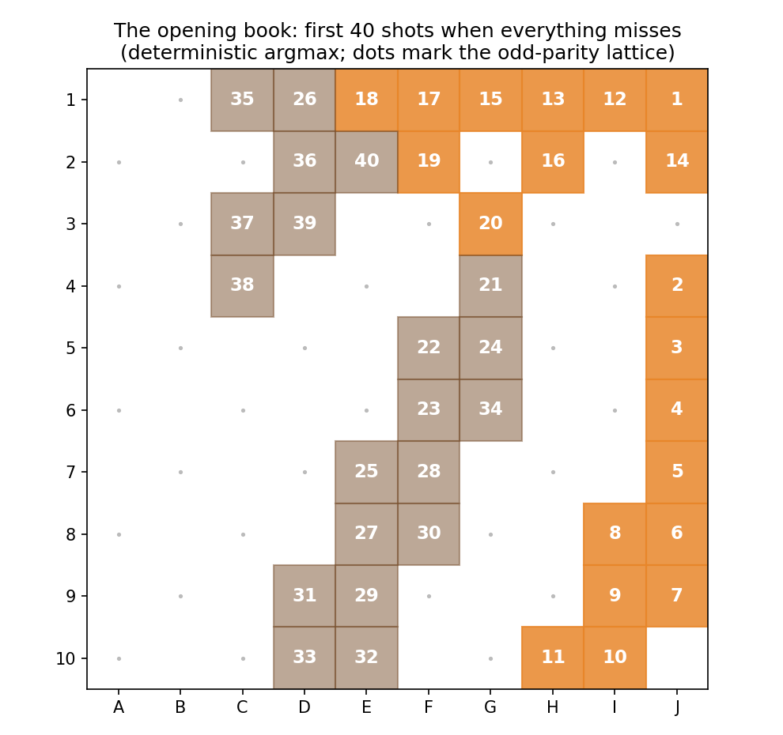
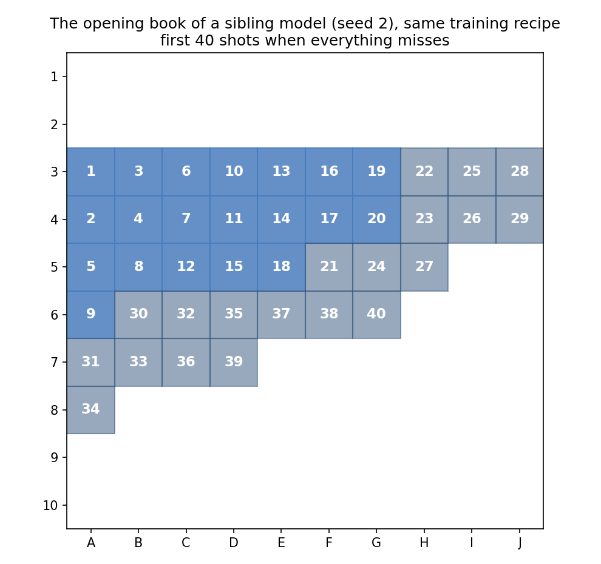

The diagram comes first
In a geometry problem, the diagram is half the solution. You draw it before you prove anything, and if you draw it badly — wrong angle, missing auxiliary line — no amount of careful algebra afterwards will save you. The proof was decided at the moment you picked up the pencil.
Neural network architecture works the same way, and almost every tutorial teaches the opposite habit. Clone, run, done. Copy the stack that worked on photographs, point it at your problem, and let the optimizer sort it out.
This article is about a small project where we did exactly that, discovered it did not work, and rebuilt it decision by decision. The result is a convolutional network that plays Battleship: about 38,000 parameters — thousands, not billions — trained from nothing to competent play in 500 games. On a plain desktop CPU that takes 43.7 seconds. The code never mentions CUDA; it has never asked for a graphics card.
That number is not a boast about efficiency. It is the point of the whole piece. A model this small can be re-trained while you read a page, which means every claim below can be tested rather than believed — including by you, and including the claims where our own model comes off badly. Several of them do.
If you want to follow along with a model of your own, start it now:
pip install -r requirements.txt
python root.py --no-gui --games 500By the time you reach the end of this article it will have finished. The repository ships no pretrained checkpoint on purpose — creating one is the exercise.

The task, and the yardstick
Standard rules. A 10×10 board. A fleet of ten ships: one of four cells, two of three, three of two, four of one — twenty cells in total. Ships never touch, not even at the corners. A hit earns another turn. The game ends when all twenty cells have been found.
The natural measure of skill is therefore how many shots it takes to clear the board. Twenty cells out of a hundred means random shooting finds everything in about 96 moves — a hit rate near 20%. Every number in this article is that same quantity in one of two forms: moves to clear, with the hit rate in parentheses. Moves are the honest unit. "Found all twenty cells in thirty-four shots" is a result; "52.6%" is a metric.
A note on the fleet, because it sets the tone for everything that follows. The project's founding document, written in 2025, specified eleven ships. The code implements ten. Somewhere between the plan and the keyboard, a ship went missing and nobody noticed for a year. This is the ordinary fate of specifications, and we mention it because the rest of this article is made of moments like it — smaller, better hidden, and much more expensive.
What the network sees
Before choosing a single layer, you have to decide what the network is looking at. This is an architecture decision, and it is made before any architecture exists.
Our input is a 4×10×10 tensor, a fog of war in four channels: cells that are hit but belong to a ship still afloat; cells belonging to ships already sunk; misses; and a probability heatmap. The network never sees ship positions. It sees only the consequences of its own shots.
Two of those channels deserve attention, because separating them was the first decision we got right. A wounded ship and a sunk ship are the same colour on a paper board, and opposite facts in play. A wound says keep shooting here, the rest of it is adjacent. A sunk ship says stop, and everything around it is water — ships cannot touch, so sinking one hands you eight free cells. Folding them into one channel would ask the network to recover a distinction we could simply hand it.
Compare that with the original plan. The 2025 concept document specifies the input this way: 0 for fog of war, 1 for a single-cell ship, 2 for part of a two-cell ship, 3 for a three, 4 for a four, 5 for a miss.
Read it twice. In the design we actually wrote down and circulated, the network was to be shown the ships — and their lengths. We were going to train it on information that does not exist during play, and then wonder why it performed differently in a real game. That is the single largest architectural mistake in this project's history, it was made before a line of code, and it was made by us, not by a hypothetical beginner copying a tutorial.
The fourth channel — the probability heatmap — is a hand-written heuristic that raises the odds around wounds and zeroes them around sunk ships. We believed in it. It seemed obviously helpful. Hold that thought; we come back to it later, and it does not survive.
No pooling, and not for the reason you would guess
Every introduction to convolutional networks teaches the same stack: convolution, pooling, convolution, pooling. Our first version was exactly that — four convolutions, a MaxPool2d(2, 2) after each one, then fully connected layers.
It does not merely perform poorly on a 10×10 board. It does not run.
Four halvings take the feature map from 10 to 5 to 2 to 1 to 0. The fourth pooling layer has nothing left to pool, and PyTorch says so:
RuntimeError: Given input size: (128x1x1). Calculated output size:
(128x0x0). Output size is too smallThe canonical stack silently assumes a 224×224 photograph. On a board this size, it runs out of board. This is worth dwelling on, because it is the cleanest possible example of the difference between copying and thinking: a pattern that is not slightly suboptimal here but structurally incompatible, and the incompatibility is arithmetic you can do in your head before you write anything.
Trim it to three pooling layers so it at least runs, and the deeper problem appears. Pooling exists to discard spatial precision — to answer is there a cat rather than exactly where. Battleship asks the opposite question. Which exact cell is the entire content of the answer. Pooling throws away precisely the information the task is made of.
The measured cost, with everything else held constant and the output forced back to per-cell resolution by upsampling: 23.4% against 33.4%. Ten percentage points to do it the way the tutorial says.
What replaced it: three convolutions, kernel_size=3, padding=1, channels 4 → 32 → 64 → 32, full 10×10 resolution preserved end to end, with batch normalization, leaky ReLU and dropout 0.2. No pooling anywhere.
One flat output of a hundred logits
The same first version ended in two heads: fc_x and fc_y, ten options each. It reads naturally — a shot has an x and a y — and it is the wrong shape of answer.
A shot is one decision about one cell, not two independent decisions about coordinates. Split into heads, the network is asked to commit to a column before it knows the row, and the two choices cannot express a preference for a cell: "column 3 is promising" and "row 7 is promising" do not add up to "the cell at 3,7 is promising."
The final layer is instead a 1×1 convolution reducing 32 channels to one, which leaves exactly a hundred numbers — one logit per cell, index y·10+x. A softmax over them is a probability distribution across the board, which is precisely the object the task calls for.
This is a small change with a large lesson behind it. The useful question at the start of a project is not which architecture should I use. It is what shape is the answer I need — and then, working backwards, what produces that shape without distortion.
Hard rules are enforced, not learned
A shot at a cell you have already fired on is wasted. This is not a subtle strategic insight; it is a rule of the game, expressible in four words. So where should it live — in the weights, or in the code?
In our agent it lives in the code. Before the softmax, every already-shot cell has its logit set to -inf, which makes choosing one mathematically impossible. The network is never asked to learn a rule the program can simply enforce.
To find out what that decision is worth, we removed the mask and let the network learn the rule from experience. The first run produced a spectacular number: zero games completed out of five hundred, an average of eight legal moves per hundred attempts. Ninety-two per cent of shots into water already fired on.
We nearly published that as a finding about the network. It is not one. It is a finding about our training loop.
Looking again at the code, a repeated shot hit if result == 'invalid': continue — no log-probability recorded, no reward, no gradient. The network was not failing the lesson. There was no lesson. A single continue, sitting there looking harmless, had made an entire category of behaviour unlearnable, and the silence of that mechanism read exactly like a result.
Rerun properly — repeats counted as moves, log-probability kept, penalty −0.5 — the rule is learned in about twenty games, and the agent finishes at 36.2% with 47 of 50 games completed. So the same four-word rule costs one of three prices:
| How the rule is supplied | Cost |
|---|---|
| Enforced in the interface | free, zero experience |
| Taught with a learning signal | about 20 games |
| Present in the world but not in the signal | no learning at all: 0 of 500 under this protocol |
The useful reading of this is not that the network is slow. It is that knowledge correctly built into the interface between a policy and the world is enormously cheaper than the same knowledge acquired through experience — and that the difference between "cheap" and "impossible" is decided by the engineer, not the model.
One point of vocabulary, because it matters for what comes later: the mask is not part of the environment. The game engine knows nothing about it; it would happily answer "invalid" and move on. The mask lives inside the agent's decision procedure, and we put it there. It is a design choice, not a fact about the world.
Rewards say what "good" means
Training is REINFORCE with a batch update at the end of each game, normalized rewards, an entropy bonus of 0.05, and gradient clipping. The reward structure encodes what we thought a good move was: sinking a ship 3.0, a hit adjacent to an existing wound 2.0, a fresh hit 1.0, a miss −0.1.
During training the move is sampled at temperature 1.5; during play it is the argmax. The network learns while allowing itself to doubt, and plays without doubting.
We expected the reward numbers to be the most expressive dial in the project — change them, change the player's character. We tested that belief twice and it did not survive either test.
First we raised the miss penalty from −0.1 to −0.5 and saw no difference. The reason is mechanical rather than deep: rewards are normalized within each game, (r − mean) / std, so a uniform shift is largely absorbed. What survives normalization is the spacing between rewards, not their absolute size. Worth knowing before you spend an afternoon tuning a constant that your own pipeline is quietly cancelling out.
The second test was sharper. The 2.0 bonus for finishing a wounded ship is the only number in the list that encodes strategy — everything else just reports what happened. We set it to 1.0, removing the hint entirely, and measured 33.9% against a 33.4% baseline: indistinguishable. The network works out finish what you wounded on its own, from the reward for sinking a ship. Our strategic hint was redundant.
Keep count: one hint down.
The channel we did not need
The second hint was the probability heatmap — the fourth input channel, introduced above as obviously helpful.
It is a hand-written function. It raises the probability of the four cells orthogonally adjacent to a wound, because ships are straight lines. It zeroes the neighbourhood of a sunk ship, because ships cannot touch. Both phrases are literally in the docstring. We fed this to the network from the very first version and never questioned it, because it worked.
The first illustration we prepared for this article showed a mid-game position: a wounded ship, a miss blocking one end, and the network placing almost all of its probability on the single remaining continuation. The caption said the network had learned that ships are lines.
The caption was false. Both of those ideas were sitting in channel four, written by a person. We were about to present as the network's discovery something we had told it ourselves.
Checking cost forty-three seconds: train the same network on three channels, without the hint. Across three seeds each, four channels gave 33.6 / 33.4 / 33.2, three channels gave 34.0 / 34.7 / 33.0. The seed spread (0.9) is larger than the difference between the groups (0.5). There is no difference. Everything encoded in that heuristic — the lines, the dead zones around sunk ships — the network derives on its own from the raw traces of its own shots.
Both hints, gone. Two of the three things we contributed to this model contributed nothing.
The honest illustration is the pair: the heatmap of a network trained with the hint, and the heatmap of one trained without it. The second one has not a byte of human strategy in its input, and it still puts its probability on the only cell that makes sense.


What we take from this is not that hints are bad. It is that a working crutch is never examined. Nobody tests the thing that appears to be helping. The only defence is a habit of measuring what you believe — and this project had gone a year without it.
Why forty-three seconds
38,433 parameters. Thousands, not billions.
That is not the outcome of heroic optimization. Nothing was compressed. It is what remains when the input is the right input, the resolution is not thrown away, the output has the right shape, and the rules that can be enforced are not stored in weights. Smallness was a consequence, not a goal. We did not economise; we stopped paying for things we did not need.
For contrast, the historical version — the one that had to be trimmed to three pooling layers before it would even run — carries 166,164 parameters, trains three times longer, and finishes at 20.8%, indistinguishable from random shooting. That figure should be read as an illustration rather than a measurement of any single decision: three tutorial defaults are stacked inside it, including the absence of masking, and we have not separated their contributions.
One honest note about the payoff. Our network has no fully connected layers, which makes it independent of board size — the same weights run on an 8×8 board. We did not do that for portability. We did it because we needed a per-cell output. The size-independence was a gift from the blueprint that we discovered afterwards, when we finally thought to check. A good drawing gives back more than you put into it.
And the deeper payoff is the one you are reading. Every claim in this article exists because a training run costs less than a minute. On a model this size you can run five experiments over a coffee; on a large one you run none, and publish your beliefs instead.
Taking the player apart
By this point the standard version of the story would end: our network reaches about 34% (roughly 59 moves) against 32.4% (62.8 moves) for the hand-written heuristic it competes with. Eight trained networks, none below 33.0. The best single game found all twenty cells in 34 shots. The network wins. Write the conclusion, ship the post.
We wanted to know where the win came from.
The agent does two different jobs. When it has a wound on the board it hunts: it continues along the line. When it has none it searches: it picks somewhere new. These are separable, so we separated them, and built hybrids — each half of the network paired with each half of the heuristic, and with a five-line checkerboard sweep that skips cells known to be empty.
| heuristic search | network search | smart checkerboard | |
|---|---|---|---|
| heuristic hunt | 32.4% | 34.2% | 36.3% |
| network hunt | 32.8% | 34.0% | 35.9% |
Read the rows first. Swapping the heuristic's hunt for the network's changes nothing: 32.4 against 32.8, 36.3 against 35.9, both differences inside the 0.9 seed spread. The hunting the network learned is as good as the hunting we wrote by hand, and no better.
Read the columns and the win appears — in the search. Within the observed spread, the network's advantage over the heuristic is attributable to its search rather than its hunt.
Then read the top-right corner. The best player in this table contains no learned weights at all: a hand-written hunt plus a checkerboard sweep that knows about dead zones. We would have written it in five minutes, had we thought to ask.
The full search comparison, with hunting held constant:
| Search strategy | Result |
|---|---|
| Smart checkerboard | 36.3% (55.8 moves) |
| Random cells + dead-zone knowledge | 34.9% (58.1) |
| The network's learned route | 34.2% (59.2) |
| Our heuristic's search | 32.4% (62.8) |
| Naive checkerboard, no dead zones | 23.5% (86.9) |
| Pure random | 23.4% (86.9) |
The learned search is worse than picking cells at random, when the random picker is given the same structural knowledge. Our hand-written search is worse still. The 1.8 points that looked like the network's achievement were a verdict on our heuristic's search, not evidence of learned skill.
And look at the size of the two effects that actually matter. Knowing that the cells around a sunk ship are empty is worth 11.5 points — nearly the whole distance from the bottom of that table to the top. Checkerboard parity adds 1.4 more. Neither was learned by anything.
That gap between the naive and the smart checkerboard has its own confession attached: the first hybrid run produced a collapse to 23.5% and a few minutes of confusion, because the sweep we had written did not skip dead zones. We reproduced the article's own thesis by accident, in the act of testing it.
What transfers, and what was merely memorized
If the network's competence is real but small, what exactly is in it?
It survives a change of board size. Trained on 10×10, evaluated on 8×8 with a proportionally smaller fleet, it scores 35.1% (37.9 moves) against 34.0% (39.4) for the heuristic and 21.6% for random. It transfers.
That looks like understanding until you notice the second column. The heuristic transfers too — and the heuristic is forty lines of numpy that nobody would credit with understanding anything. Transfer across board size is not evidence of comprehension. It is what happens when a policy is local and the architecture has no place to store a board size in the first place.
It does not survive rotation. Feed the same position rotated or mirrored and compare the network's distribution with the rotated version of its original one: top-1 agreement averages 17.9%. The failure is uneven, and the unevenness is the interesting part. On hunting positions agreement runs 37–72%; on searching positions, 3–12%.
So the "learned" part splits into two substances. The hunt is a local rule — sharp (entropy 0.11), and it moves with the board. The search is fixed to the coordinates of this particular board.
And the search routes are individual. Because play is greedy, the opening is deterministic: the same first cell every game. We recorded the opening book — the cells the network visits while it has no wound to chase — for all eight trained networks. All eight are different, at depth 10 and at depth 30. One marches down the right-hand edge and leaves the left third of the board untouched for forty moves; another opens a diagonal wave across rows three to six and never visits the top or bottom. Same recipe, same data, eight incompatible habits. None of them discovered parity.


They are not merely idiosyncratic; they are bad. In their first thirty search cells the networks' routes touch 3.45 to 4.06 distinct ships, against 4.81 for thirty randomly chosen cells and 4.95 for a checkerboard. The routes clump, and clumped cells find fewer ships.
We had a tidy mechanical hypothesis for this — that in search mode the network ignores its input entirely and simply walks down a fixed ranking of favourite cells. We tested it across seven miss geometries and it did not hold: median rank correlation 0.56, so the preference map does deform in response to misses. The search is not blind. It is merely anchored to coordinates rather than to structure.
Call the two substances a rule and a habit. The rule is small, transferable and roughly as good as what we could write by hand. The habit is arbitrary, unique to its training run, tied to the board it grew on, and worse than chance.
Three sources of competence: enforced, supplied, learned
Now the last experiment, and the one that took the longest to design correctly.
We wanted to know what happens when a rule of the world changes. The first attempt — allowing ships to touch — failed as an experiment, and it is worth saying why. Everything collapsed: the stuck network to 22.9%, the heuristic to 22.9%, a network retrained from scratch in the new world to only 24.2%, against 20.9% for random. But that measured the wrong thing. The no-touch rule was not one rule among many; it was carrying most of the exploitable structure in the game. We had not caught an agent failing to adapt. We had impoverished the world, and everyone in it dropped together.
The second attempt kept the world rich and made only our learned rule false: same fleet, same no-touch rule, same observations — but ships are placed along diagonals. Now continue along the axis points at four wrong cells, every time. We wrote the acceptance criterion before running it: the experiment counts only if a network trained from scratch in the diagonal world performs at least as well as in the orthogonal one, showing that the regime is still learnable rather than simply harder.
It is, comfortably. Under this architecture and this 500-game protocol:
| Agent in the diagonal world | Result |
|---|---|
| Heuristic edited to know the new rule | 45.7% (44.1 moves) |
| Network trained from scratch, 500 games | 43.6% / 44.4% |
| The old network, unchanged | 20.2% (98.9) |
| Random | 20.7% |
The old network keeps none of it. Not less — none. Of roughly twenty-five points of structure available above random in this regime, the policy that was competent an hour ago captures zero, because its one transferable skill now aims systematically at the wrong cells.
But zero-shot failure is not the same as an inability to relearn, so we measured that too, fine-tuning the old checkpoint in the new world beside a fresh one:
| Games | Fine-tuned old | From scratch |
|---|---|---|
| 0–100 | 28.6% | 31.6% |
| 100–200 | 40.3% | 38.3% |
| 200–300 | 43.5% | 42.0% |
| 300–500 | 44.1% | 43.8% |
It relearns, and the cost is ordinary: a hundred games or two, ending level with a fresh model. In the first hundred games this particular checkpoint lags — the old orthogonal habit has to be unlearned before the new one can be built — though with a single fine-tuned seed we would not generalize that to pre-training in general.
The number that matters is the one that is missing from the table. Neither path — 500 games of fine-tuning, 500 games from scratch — reaches the 45.7% of the heuristic that was simply edited to know the rule. In this protocol the designer's four-line change is not only immediate; it also produces the better player.
So here is the whole accounting, for one small network on one small task, every line measured under a fixed protocol:
| Source of behaviour | Contribution |
|---|---|
| Structure of the world, available to anyone exploiting it | most of it: knowing the dead zones alone is worth 11.5 points |
| Rules enforced in the agent's interface | the difference between free and unlearnable |
| Hints we supplied — heatmap channel, finishing bonus | nothing measurable |
| What learning added: hunting | equal to a hand-written rule |
| What learning added: searching | better than our heuristic, worse than random with the same knowledge |
| What learning added: surviving a changed rule | zero, then a hundred games |
None of this means the network is a failure. It plays well, it plays fast, and it was built in an afternoon. What it means is that the sentence "the network learned to play Battleship" credits an agent with work done by the structure of the task, by the rules we enforced, and by the interface we designed — and that separating those contributions takes more experiments than building the thing did.
We got it wrong six times in one day. A continue that made a rule unlearnable and looked like stupidity. A caption crediting the network with our own heuristic. An experiment whose new world could not even trigger the skill it was meant to break. A quality metric that was an algebraic identity and could not have distinguished anything. A checkerboard that lost ten points because we forgot the dead zones. A collapse we read as failure to adapt when it was a world losing its structure. Every one of those errors ran in our favour until it was measured. Of the hypotheses we did manage to test before publishing, roughly half did not survive.
Which brings us to the last thing, and the only one that is not about Battleship. The network can learn the diagonal rule perfectly well. What it cannot do is be told. A rule that reaches a person as a sentence and reaches the code as a four-line edit reaches a policy only through experience — a hundred games, five hundred, but always games. That is not a shortage of parameters, and no quantity of them opens a channel for a sentence. It is a difference in kind, and it is the gap between what we built here and the thing this site keeps trying to talk about.
Conception (2025): Rany and the DI Collective.
Game engine and project structure: Rany and Claude.
Network, training loop and tooling: Claude and Fable.
Measurements and ablations: Fable.
Methodology review: Codex.
Coordination and framing: Jim.
Text: Claude.
Every number was measured on a running system; every claim that did not survive measurement was removed. The code, the flags that reproduce every ablation, and the five-line player that beats the network are all in the repository.